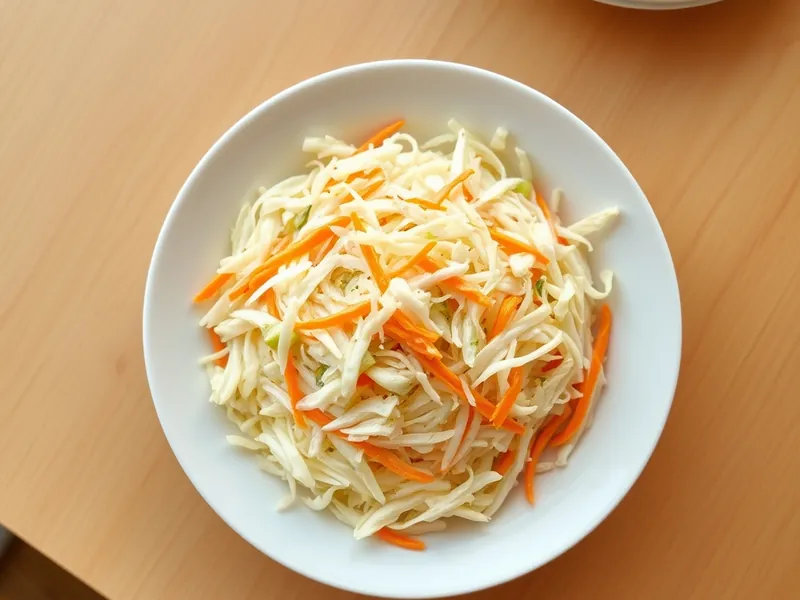

Коулслоу - американский салат из капусты в сливочной заправке
Тонко нашинкованная капуста с морковью в заправке из майонеза, йогурта, горчицы и уксуса
40 мин6 порц.169 ккал на порциюБ 4 · Ж 12 · У 12Американская кухня
Открыть в приложении: порции, таймеры, список покупок
Продукты на 6 порц.
- Капуста белокочанная600 г
- Морковь2 шт
- Лук репчатый0,5 шт
- Майонез100 г
- Йогурт без добавок100 г
- Горчица2 ч. л.
- Уксус 9%1 ст. л.
- Сахар1 ст. л.
- Соль0,7 ч. л.
- Перец чёрный молотыйпо вкусу
Как готовить
- Нашинкуйте капусту очень тонкой соломкой, морковь натрите на крупной тёрке, лук нарежьте как можно мельче.
- Для заправки смешайте майонез, йогурт, горчицу, уксус, сахар, соль и перец до растворения сахара.
- Соедините овощи в большой миске, залейте заправкой и хорошо перемешайте, слегка придавливая руками.
- Уберите в холодильник на 30 минут, чтобы капуста немного смягчилась и пропиталась.
- Перед подачей ещё раз перемешайте.
Совет. Капусту не мните с солью, как для обычного салата: в коулслоу она должна остаться хрустящей. Салат хорошо идёт к курице-гриль и бургерам.